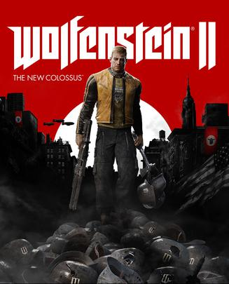

2018年1月
广播发布后不可编辑，所以每条都是那一刻的原话。
2018-01-28 19:22:33
 想看 金蝉脱壳2：冥府 / Escape Plan 2: Hades
想看 金蝉脱壳2：冥府 / Escape Plan 2: Hades
赞赞赞！
2018-01-26 11:43:08
 玩过 神舞幻想 ★★★☆☆
玩过 神舞幻想 ★★★☆☆
哦，字幕结束了还有剧情，加一星！ //女主模型做的确实好看，但是剧情太狗血了，生死儿戏。视频通关：《【神舞幻想】9小時電影剪輯版(中文字幕) - PC特效全開2K60FPS劇情電影 - 第一款虛幻4引擎國產遊戲 - 最強2K無損畫質》。希望古剑3不要让我失望。
2018-01-26 08:52:36
在玩 神舞幻想 ★★☆☆☆
什么狗屁剧情，豆瓣第一次骂作品
2018-01-26 07:43:05

久仰大名
2018-01-26 07:39:53
想玩 巫师3：狂猎 The Witcher 3: Wild Hunt
竟然忘了mark这个
2018-01-26 07:37:18
 玩过 率土之滨 ★★★☆☆
玩过 率土之滨 ★★★☆☆
有些创新点，但是，这不就是抄部落冲突的吗 =。=
2018-01-26 07:36:01
 玩过 刺客信条：起源 Assassin’s Creed Origins ★★★★★
玩过 刺客信条：起源 Assassin’s Creed Origins ★★★★★
100小时100%，真累啊，玩了三个月，平均每天一小时，其他游戏都没玩。感觉今年不会再买育碧游戏了，前年看门狗也是完了100多小时才100%，地图又大、收集要素又多。//删了很多游戏，终于预载好了，敲碗坐等27号凌晨。 //等的好心急啊，满机子的游戏都不想玩，只想玩这个游戏
2018-01-26 07:23:23
 想看 勇敢者游戏：决战丛林 / Jumanji: Welcome to the Jungle
想看 勇敢者游戏：决战丛林 / Jumanji: Welcome to the Jungle
2018-01-20 21:20:10
 想看 虎啸龙吟
想看 虎啸龙吟
被王洛勇老师圈粉，一定要看！
2018-01-17 06:49:53
在玩 率土之滨
这不就是抄部落冲突的吗 =。=
2018-01-14 11:53:36
 看过 星河战队 / Starship Troopers ★★★★☆
看过 星河战队 / Starship Troopers ★★★★☆
小学2年级看的合肥点播台，看了好几遍才看到结局 _(:з)∠)_ 真是难忘的回忆啊，当时还不是很懂
2018-01-13 19:33:48
 看过 黑镜 第四季 / Black Mirror Season 4 ★★★★☆
看过 黑镜 第四季 / Black Mirror Season 4 ★★★★☆
第4集结局最暖，然而打破了“细思恐极”的套路；每一季的最后一集都是比较出彩的 =。=
2018-01-11 19:33:02
在看 黑镜 第四季 / Black Mirror Season 4
ok 那就看第四季
2018-01-11 19:32:19
 看过 黑镜 第三季 / Black Mirror Season 3 ★★★★★
看过 黑镜 第三季 / Black Mirror Season 3 ★★★★★
好像没有后6集了？？？ //原评论：真是过瘾，虽然前面的节奏有点乱，但是最后一集那种世界被科技毁灭而且束手无策的感觉真是细思恐极 :D 等接下来的6集
2018-01-11 15:02:40
 想看 三块广告牌 / Three Billboards Outside Ebbing, Missouri
想看 三块广告牌 / Three Billboards Outside Ebbing, Missouri
分这么高，我很好奇
2018-01-11 11:50:44
 在看 紫罗兰永恒花园 / ヴァイオレット・エヴァーガーデン ★★★★★
在看 紫罗兰永恒花园 / ヴァイオレット・エヴァーガーデン ★★★★★
看完了第一集，画面真是美啊，音乐也很好听！已b站入正 //原评论：京阿尼的番，不用看就先预定5星好评！
2018-01-11 08:08:47
在看 紫罗兰永恒花园 / ヴァイオレット・エヴァーガーデン ★★★★★
京阿尼的番，不用看就先预定5星好评！
2018-01-09 14:17:13
 玩过 神秘海域2：纵横四海 Uncharted 2: Among Thieves ★★★★★
玩过 神秘海域2：纵横四海 Uncharted 2: Among Thieves ★★★★★
精彩！ref: 《秘境探險2_神秘海域2：盜亦有道》纯黑实况解说 第11期（完）-vtn6p5kGyIw.mkv
2018-01-08 22:08:18
 看过 飞屋环游记 / Up ★★★★★
看过 飞屋环游记 / Up ★★★★★
开始感觉设定和小王子的电影有点类似就忽略了，最近片荒一睹真容，搞笑+感动元素都蛮不错的，最后一幕房子刚好落在该在的地方，倍感欣慰
2018-01-08 08:20:04
 玩过 恋与制作人
玩过 恋与制作人
哦，是给女生玩的啊，尴尬了
2018-01-05 22:40:29

没有三公主，依然是准备视频通关然后玩去年预购但是一直没玩的nier automata =。= 屯游戏不玩是罪过啊：NIER - The Movie [All Cutscenes_Endings in 1080P]-fishmFc5Ntk.mkv
2018-01-05 22:37:22
 读过 新华字典 ★★★★★
读过 新华字典 ★★★★★
这个，这个，我应该是高考结束的那天开始就再没翻过了 哈哈哈哈哈hhhh
2018-01-05 22:32:41
 玩过 模拟人生4 The Sims 4 ★★★★☆
玩过 模拟人生4 The Sims 4 ★★★★☆
帮表妹装机的时候顺便玩了一波=w= 显然玩的是共产主义版
2018-01-05 16:18:02

看了最后一集的最后10分钟，感觉还是不错的吧，但是，今天，我还是浮躁了，若有机会，我会补上
2018-01-05 16:09:18
 看过 迷失 第三季 / Lost Season 3 ★★★☆☆
看过 迷失 第三季 / Lost Season 3 ★★★☆☆
看到吐血 =。= 怎么这么长！！！纠结到底该不该看下一季，，，想了一下，还是不看了。人生苦短，时间要花在热爱的事情上。
2018-01-04 09:19:51

日常想看
2018-01-03 22:30:21
想看 黑镜 第四季 / Black Mirror Season 4
都不知道出来了，看来第三季说好的后6集烂尾了
2018-01-03 21:15:28
 看过 盗梦空间 / Inception ★★★★★
看过 盗梦空间 / Inception ★★★★★
真好看啊，之前看了一下剧情解密才理解了这个结局。 //2015-08-26 脑洞奇大无比，即使不完全理清逻辑还是非常引人入胜